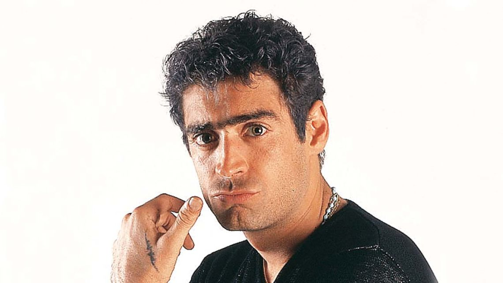

Rodrigo Bueno, conocido como “El Potro”, fue uno de los máximos exponentes del cuarteto argentino y un ícono popular que marcó a toda una generación. Con su carisma, energía en el escenario y estilo inconfundible, logró llevar este género a lo más alto a nivel nacional. Su música sigue vigente, emocionando a miles de fanáticos que recuerdan su legado y celebran su historia.